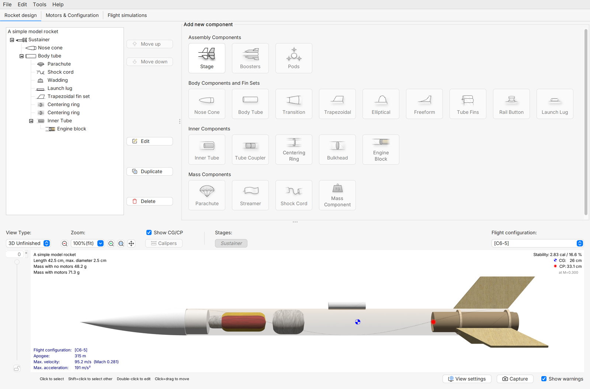
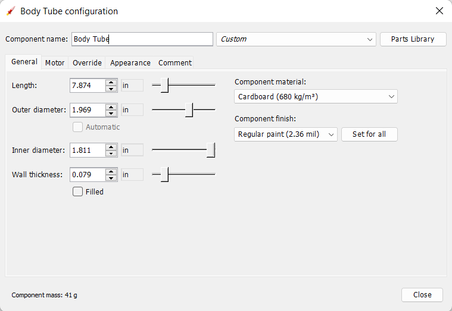

Cuerpo, dimensiones y espacio interior
Elegir un tubo disponible y distribuir componentes sin confundir longitud exterior con espacio útil.
El cuerpo organiza el proyecto
Elegir la longitud del cuerpo no consiste en copiar una fotografía. Debe haber lugar para el conjunto comercial previsto, sus interfaces y el sistema de recuperación. El tamaño también determina qué herramientas permiten trabajar dentro y cómo se sostiene el modelo durante el montaje. En un proyecto pequeño, unos centímetros pueden facilitar el acceso o dejar un espacio que no se puede aprovechar.

Cuatro preguntas antes de cortar
| Pregunta | Qué comprobar |
|---|---|
| ¿Qué tubo tenemos? | Diámetros, longitud, estado y masa |
| ¿Qué debe alojar? | Lista y envolvente de los componentes |
| ¿Cómo se conecta? | Nariz, uniones y conjunto comercial |
| ¿Cómo se revisa? | Acceso, desmontaje y recuperación |
El plano de distribución comienza con la longitud real del tubo y con bloques que representan componentes. No hace falta diseñar cada detalle desde el principio. Sí hace falta que cada bloque tenga un tamaño y una función reconocibles.
El cuerpo cumple varias funciones a la vez. Mantiene una referencia longitudinal, conecta el frente con la zona posterior y ofrece volumen para componentes. Su pared separa el diámetro exterior del espacio disponible. Al sostener un tubo, busca su eje imaginario y observa si los bordes son razonablemente perpendiculares a él. Un dibujo puede mostrar un cilindro perfecto mientras el tubo real presenta un borde inclinado o una sección deformada. Reconocer esa diferencia forma parte de aprender a fabricar.
Diámetro y longitud cumplen funciones diferentes
Aumentar el diámetro abre más espacio transversal y cambia el contorno exterior del vehículo. Aumentar longitud añade espacio a lo largo del eje, pero no ayuda a que entre una pieza demasiado ancha. Una tarjeta electrónica puede caber por volumen total y aun así no pasar por la abertura. Por eso probaremos envolventes o maquetas simples en lugar de decidir solo con litros o centímetros cúbicos.
Qué sucede al modificar el cuerpo
| Cambio | Lo que puede resolver | Qué vuelve a revisarse |
|---|---|---|
| Mayor diámetro | Paso de una pieza más ancha | Nariz, aletas, masa y modelo |
| Mayor longitud | Separar zonas interiores | Masa, distribución y acceso |
| Mayor espesor | Cambiar rigidez y fabricación | Interior útil y masa |
| Otra sección de tubo | Facilitar recambio o unión | Alineación y continuidad |
La pieza cabe en el dibujo, pero no entra
Una maqueta de carga tiene 31 mm de ancho y el tubo tiene 30 mm de diámetro interior. Alargar el tubo 40 mm aumenta el espacio disponible.
Razonamiento del caso
La modificación no resuelve el paso transversal de la carga. Hay que revisar su envolvente, su orientación o el diámetro útil. La conclusión sale de la pieza real y de dos medidas, sin calcular un volumen complicado.
Esta misma idea sirve para el sistema de recuperación plegado. Debe poder entrar y salir según el conjunto elegido. Un dibujo con espacio aparente puede ocultar cordones, uniones o rebordes impresos.
El espacio útil incluye la posibilidad de trabajar. Una conexión puede caber después de montada y aun así requerir un acceso que el cuerpo no ofrece durante la fabricación. Por eso la distribución se revisa también siguiendo el orden de montaje. Pregunta qué pieza entra primero, cuál debe quedar accesible y qué información tendrás que fotografiar antes de cerrar. Dibujar el orden junto a la vista lateral ayuda a resolverlo sin un modelo tridimensional complejo.
El diámetro se mide atravesando la sección del tubo, mientras la longitud se sigue a lo largo de su eje. Dos tubos de igual diámetro exterior pueden tener interiores diferentes si cambia el espesor. Para visualizarlo, coloca uno junto a otro y compara sus aberturas. La elección del cuerpo afecta a otras piezas porque la nariz debe relacionarse con esa abertura y la recuperación necesita espacio y acceso. Por eso el diámetro del tubo se decide con componentes presentes o representados por envolventes identificadas.
Un plano sencillo que sí ayuda a fabricar
El plano del equipo debe tener vista lateral, una referencia de inicio y cotas legibles. Identifica qué longitud es de una pieza suelta y cuál corresponde al conjunto ensamblado. Si el hombro de la nariz entra en el cuerpo, esa parte queda superpuesta. Sumar todas las longitudes de piezas sin considerar los encajes produce un cohete más corto de lo que se esperaba.
Longitud ensamblada
Nariz visible de 70 mm, cuerpo de 280 mm y hombro de 20 mm que queda completamente dentro del cuerpo.
Razonamiento del caso
La longitud exterior es 350 mm. El hombro permite unir las piezas y no añade otros 20 mm al exterior. Si una parte queda expuesta por otro diseño, debe representarse y medirse explícitamente.
Información mínima del plano
| Elemento | Dato que debe aparecer |
|---|---|
| Nariz | Longitud visible, base y hombro |
| Cuerpo | Longitud y diámetros |
| Aletas | Zona de unión y posición longitudinal |
| Recuperación | Zona reservada y acceso |
| Conjunto comercial | Referencia de componente y envolvente |
No dibujes conexiones internas por intuición si vas a usar un conjunto comercial. Usa sus dimensiones y documentación. Si todavía no se ha seleccionado, representa la zona como pendiente y evita cerrar detalles que dependan de ella. Un plano preliminar puede estar incompleto y seguir siendo útil si lo declara.
En una unión entre tramos de cuerpo se diferencia la longitud de cada pieza y el solapamiento del conjunto. La referencia de una aleta tampoco se toma desde un borde que vaya a cambiar en el acabado. El plano debe permitir reconstruir el objeto ensamblado. Si al presentarlo aparece una diferencia, mide dónde comienza y termina; no distribuyas el error moviendo varias piezas a la vez, porque perderías la causa de la discrepancia.
OpenRocket: representar el tubo real

- Abre el archivo del equipo y guarda una revisión CUERPO_v02. Selecciona Body Tube.
- Sustituye longitud y diámetros por las medidas disponibles. Conserva una tabla con el dato anterior y el nuevo.
- Comprueba que Filled esté desactivado si el tubo es hueco. Revisa cómo se relacionan espesor e interior.
- Añade los componentes interiores que ya tienen referencia y dimensiones conocidas. Nómbralos según su función.
- Usa la vista interior para revisar interferencias. Guarda una captura y anota lo que todavía no puede comprobarse.
El modelo facilita ver posiciones, pero no representa automáticamente todos los cables, pliegues y detalles de una pieza impresa. El plano de fabricación y la prueba física siguen siendo necesarios. [OR1, OR2]
Body Tube representa una pared cilíndrica con dimensiones y propiedades. El programa puede calcular una masa a partir de geometría y material, pero el tubo del taller puede incluir variación de espesor, uniones y acabado. Primero se comprueba que la geometría sea la que se pretendía introducir. Después, cuando exista una medida real, se compara la masa bajo la misma condición. Corregir un campo de masa no debe esconder que se dibujó un diámetro equivocado.
Del tubo disponible al corte y al montaje
Antes de modificar el cuerpo, el equipo comprueba que el tubo no esté aplastado y define desde qué extremo medirá. Una marca de longitud requiere una referencia clara. Repetir la medición desde un borde irregular puede producir diferencias que después se interpretan como errores de la pieza impresa.
- Identifica cada tubo con equipo y revisión. Mide en más de una orientación y anota si el borde está deformado.
- Traza la longitud de acuerdo con el plano revisado. El docente valida el método de corte y acabado adecuado al material y a las herramientas del taller.
- Comprueba el borde y la continuidad de la sección antes de intentar un encaje. No ocultes una deformación aumentando a la fuerza el tamaño de la unión.
- Presenta las piezas sin pegarlas y verifica longitud ensamblada y acceso.
- Pesa el cuerpo preparado. Si se añadieron uniones o acabado, conserva la diferencia respecto a la pieza inicial.
Registro del cuerpo
| Momento | Dato a conservar |
|---|---|
| Al recibir | Medidas y masa |
| Después de preparar | Longitud y estado del borde |
| Con piezas presentadas | Longitud total y acceso |
| Antes de montar | Referencia del plano aceptado |
La presentación en seco permite descubrir interferencias cuando todavía es fácil corregirlas. Pegar primero y medir después convierte un problema de diseño en una reparación.
Elegir un cuerpo para la misión del equipo
Comparativa según uso
| Misión | Qué priorizar | Evidencia útil |
|---|---|---|
| Aprender a montar | Disponibilidad y acceso | Plano y presentación en seco |
| Reutilizar | Recambio y revisión de uniones | Desmontajes y estado del tubo |
| Carga docente | Envolvente y conexiones | Maqueta de carga y acceso a datos |
El cuerpo más corto no es necesariamente el más fácil de construir. El más largo tampoco es automáticamente el más estable. En esta etapa elegimos una distribución que pueda montarse y reservar el espacio necesario. La estabilidad y el comportamiento del conjunto se revisarán cuando el modelo tenga sus piezas y masas.
Decisión antes de fabricar
El plano solo cabe si el paracaídas ocupa exactamente el hueco dibujado, pero todavía no se ha plegado ni probado con sus cordones.
Razonamiento del caso
La distribución sigue pendiente. Conviene comprobar una muestra real y revisar el acceso antes de congelar la longitud. La evidencia que falta es una presentación del conjunto de recuperación, no una ecuación más detallada del tubo.
Entrega una vista lateral acotada y una fotografía o captura de la presentación. Señala una interferencia que hayas resuelto y una comprobación que quede pendiente. El diseño mejora cuando las decisiones se relacionan con objetos que puedes medir.
Preguntas de cierre
¿Alargar el cuerpo permite introducir una pieza demasiado ancha?
No. Hay que revisar el paso transversal.
¿Se suma dos veces la zona de un encaje?
No. Debe distinguirse longitud de pieza y longitud visible ensamblada.
¿Qué falta si solo tenemos el volumen del paracaídas?
Su envolvente plegada, cordones, acceso y comprobación de movimiento.
Entrega
Plano de distribución, archivo actualizado y ficha del cuerpo.
Bibliografía y procedencia
[NASA] NASA Glenn. Model Rockets.
[OR1] OpenRocket. Basic Rocket Design.
[OR2] OpenRocket. Getting Started.
[BODY] OpenRocket. Body Components Basics.